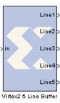

|
|
The Xilinx Virtex2 5 Line Buffer reference block buffers a sequential stream of pixels to construct 5 lines of output. Each line is delayed by N samples, where N is the length of the line. Line 1 is delayed 4*N samples, each of the following lines are delay by N fewer samples, and line 5 is a copy of the input.This block uses Virtex2 Line Buffer block which is located in the Imaging library of the Xilinx Reference Blockset.